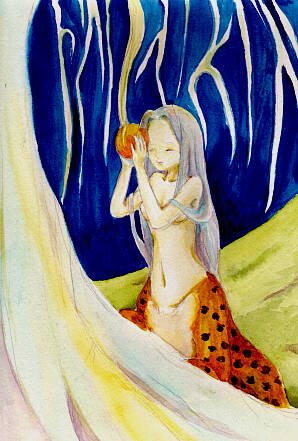

| *金の果実* |
|  |
|
2003.3 クレスター水彩紙/ホルベイン透明水彩 小野不由美さんの十二国記より、白汕子デス。。 ９月から始まるアニメ十二国記第２部「風の海 迷宮の岸」の 予告に出てきた汕子がなかなかいい感じに格好良かったので 描いてみました。む…難しいですな、やはり。。 後ろでうにゃうにゃしてるのは捨身木の枝デス…… <追記 2003.3> 絵、差し替えました。 前の絵はアラが目立ちまくってたので… 構図とか、基本的なところは変えていません。 線画自体はずいぶん前に描いてたんですが。 やっぱり汕子は難しいです… -- ｜ → |